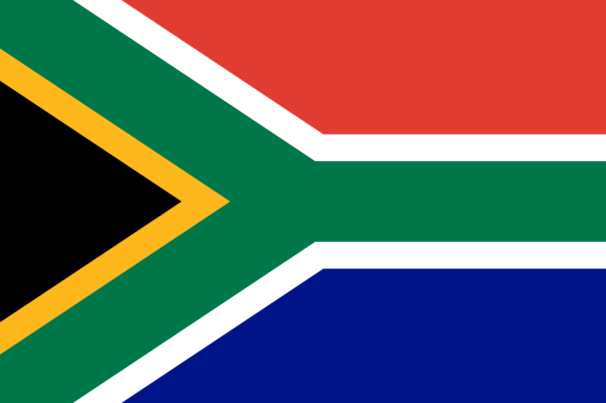
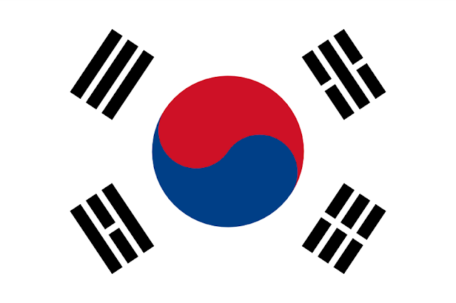
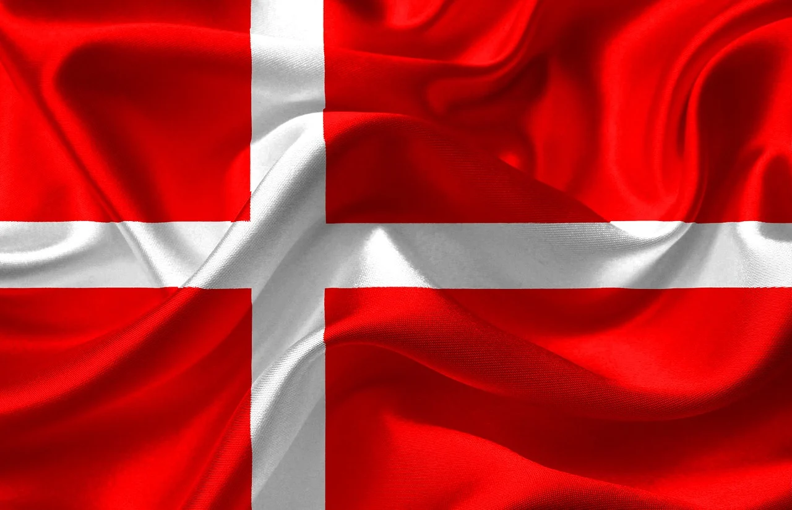

Equipos del Grupo A
México

México es una selección con mucha historia mundialista y cuenta con una gran afición.
Sudáfrica

Sudáfrica es recordada por haber organizado el Mundial 2010.
Corea del Sur

Corea del Sur es una selección asiática muy competitiva.
Dinamarca

Dinamarca es una selección europea conocida por su orden táctico y buen juego en equipo.
Estadios
Estadio Azteca
Ubicado en México, es uno de los estadios más importantes en la historia de los mundiales.
Estadio Soccer City
Está en Sudáfrica y fue sede de la final del Mundial 2010.
Estadio de Seúl
Fue uno de los escenarios importantes durante el Mundial de Corea y Japón 2002.
Parken Stadium
Es uno de los estadios más conocidos de Dinamarca.
Ciudades
Ciudad de México
Es una ciudad grande, con mucha cultura, historia y tradición futbolística.
Johannesburgo
Es una de las ciudades más importantes de Sudáfrica y tuvo gran participación en el Mundial 2010.
Seúl
Es la capital de Corea del Sur y una ciudad moderna con gran desarrollo tecnológico.
Copenhague
Es la capital de Dinamarca y una de las ciudades más representativas del país.
Historia
El Mundial de Fútbol es el torneo más importante de selecciones nacionales. En este grupo participan países de diferentes continentes, lo que hace que los partidos sean variados e interesantes.
México tiene una larga participación en mundiales, Sudáfrica fue anfitriona en 2010, Corea del Sur destacó en 2002 y Dinamarca ha tenido buenas participaciones en torneos internacionales.
Estadísticas básicas
| Selección | Continente | Dato importante |
|---|---|---|
| México | América | Selección con muchas participaciones mundialistas. |
| Sudáfrica | África | Fue anfitriona del Mundial 2010. |
| Corea del Sur | Asia | Llegó a semifinales en el Mundial 2002. |
| Dinamarca | Europa | Ha tenido buenas participaciones en torneos europeos y mundiales. |
Curiosidades
- México tiene una de las aficiones más grandes del mundo.
- Sudáfrica organizó el primer Mundial realizado en África.
- Corea del Sur sorprendió al mundo llegando lejos en 2002.
- Dinamarca es conocida por su disciplina y juego colectivo.
- Este grupo mezcla selecciones de América, África, Asia y Europa.